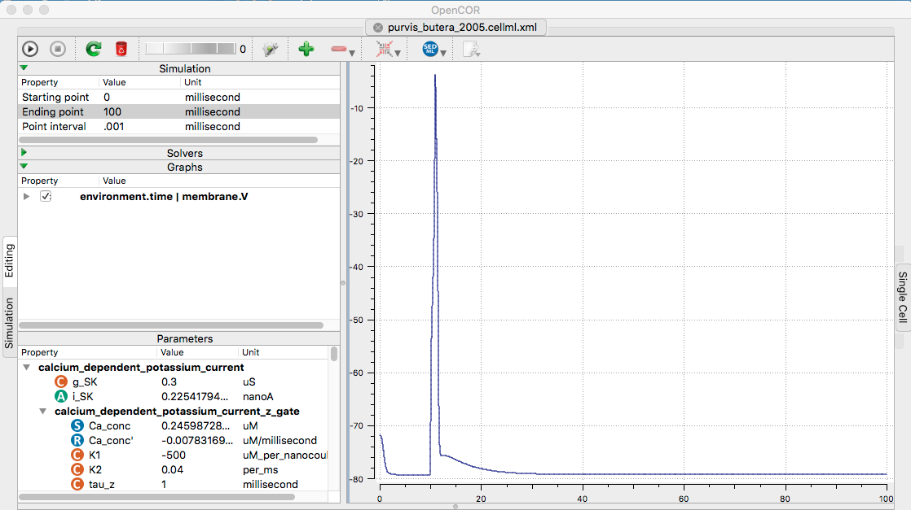

Models for the paper:
Purvis LK, Butera RJ (2005) Ionic current model of a hypoglossal motoneuron.
J Neurophysiol 93:723-33[PubMed]
are available at the cellml.org website:
https://models.cellml.org/exposure/aa68273ccf3ddc62f35709a9822feaa0/purvis_butera_2005.cellml/view
Example: Open the model file in opencor. Change the ending
point to 100ms, the point interval to 0.01. For the graph
right-clicking Vm in membrane list (select Plot against integration
variable). Finaly run (click upper left play triangle) creates the
following graph similar to fig 1 (the graph's axes can be changed by
drag with the left mouse button to pan and the right mouse button to
zoom) although the ADP and the mAHP are not as well defined as in
the paper figure: (if you happen to make this model more closely
match please let the ModelDB administrator know)
